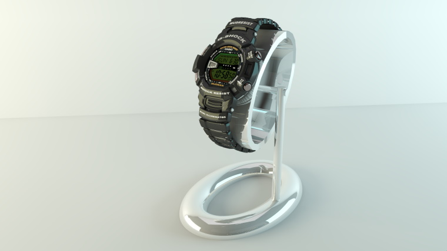

{kind=link}

Hi Brighters!
This time a small update for freshly released SketchUp 2021.
We are still working on the MacOS version of the brighter3d, stay tuned!

We changed the publisher of our software to Norferin Software. Don't worry, all your licenses (including lifetime)
will remain valid.
We added a new amazing GPU-based tone mapper for an even better post-processing of your rendered images.
Another new feature is the possibility to add a background image for your render, which is something
you've been asking for.
Hi Brighters!
This time a small update for freshly released SketchUp 2021.
We are still working on the MacOS version of the brighter3d, stay tuned!
 Hi Brighters!
Hi Brighters!
We've got new updates.
We moved HDR map settings into the main rendering window, it allows you to setup your HDR mapping mode, scale and rotation almost instantly,
speeding up your image-based lighting workflow significantly.
We introduced a new ANNUAL licence type. Now you can choose between free lifetime upgrades,
or the licence that gives you updates up to the latest version of SketchUp (2020 as now).
We upgraded the internal raytracing engine up to embree 3.8.0 for speed and reliability.
We made brighter3d compatible with the latest version of Keyframe Animation plugin.
And last but not least, we added X buttons to remove PBR textures faster...
We are working on the MacOS version of brighter3d, stay tuned!
 Hi Brighters!
Hi Brighters!
This time just a small update,
we made revoking and activating your licence even easier (now you can do that by a simple click).
Another change is an instant refresh button. Now when you change camera view and press refresh button in render window (while render started), new view rendering will start immediately.

Hi Brighters!
Version 3.1.1 Brighter3D brings new possibilities.
First of all, we added support for PBR textures, which increases rendering quality by an order of magnitude.
Now you can use maps such as:
diffuse - base color input
normal - determines the dents and bumps an object has
specular - defines object’s shininess by using a grayscale map
roughness - works similarly to the glossiness in the specular workflow
ambient occlusion - local object shading
You can select one texture and press the auto button to automatically get the other textures from the same directory.
We rewrote the way the roughness parameter is handled (you get a bit of visually pleasing blue noise at the beginning) and it converges faster.
We updated raytracing engine to the latest version, that makes Brighter3D even faster than before.
For your convenience, we added a new "Scene Tools..." Submenu which allows you to:
- change all SketchUp transparent materials into default Brighter3D glass material
- remove all artificial lights from the stage
- remove all portals from the scene
- add fill light behind the camera
- remove fill light added by the previous option
Trust us, some of these options make it easier to use the plugin - everything for you!
Share your 360 projects with others thanks to the latest version of Brighter3D! We introduced metadata to rendered 360 images, which results in better recognition in social media. Also, we added better anti aliasing with light edges.
We hope that your work with the new version of Brighter3d will be pleasant and fruitful!
 Hi Brighters!
Hi Brighters!
Long time no see, BUT we were totally absorbed for a major overhaul and we managed to improve Brighter3D's engine from the ground-up, with better performance, faster and more accurate renderings, and improved functionality. We listened from users' needs. We totally bang it, and now we deliver the new Brighter3D version 3.0.3.
So, are you happy with Sketchup 2019? We are, so we prepared Brighter3d for full compatibility with this latest version.
With this new engine, this and all future versions are 64bit only, giving users the opportunity to use all available computer memory for a seamless rendering experience.
We finally delivered a much-sought after feature: an impressive 360 degrees rendering, for online and VR use cases. The results are awesome, please do check this gem and delight yourself!
Moreover, we greatly improved the rendering engine, with a boosted super fast export of the scene, caching textures and thus instant re-renderings after a view change.
On the render screen, there is a Refresh button which will instantly re-render the scene without reexporting geometry and textures, after any view change.
For some heavy-lifters out there, now you can prepare several views of the same scene, and then chain-render them one after each other overnight, with same settings. No more wasted time! (Not that you would waste time, anyway, with our super-fast new engine! :) )
On the administrative side of things, we now allow a more flexible licence policy, so now you can revoke a licence from a computer, and re-enable it on another one, at will.
All in all, we strive to brighten our Brighter3D, and we hope you will fully enjoy our work!
Until next, we wish you a happy 2019 spring and, of course, happy renderings!

Hello Brighters!
Brighter3D keeps on moving forward, and with the new 2.8.1 release that’s now available for download you’ll find a few new functionalities, fixes and optimizations that’ll make using the plugin more efficiently.
First of all, we prepared Brighter3D for the Sketchup 2018 PRO release. Unfortunately Trimble decided to not continue MAKE version, but you can still use SketchUp 2017 MAKE for free.
We tested & optimised the plugin for the new version, but if you find any possible glitch, please get back to us and we’ll fix things.
Also, one of the improved functionalities is the capability of reversing all selected faces with a single touch of the Reverse Faces Button form the Brighter3D Toolbar. Previously this was possible only one by one. Reversing is done preserving the material.
For any user of a rendering plugin, reversing faces (a regular problem in rendering world) is a real pain, and our functionality increases the workflow’s efficiency. Also, reversing faces is not only useful for rendering purposes. Our plugin can be used for this task unrelated to any rendering job – yes, you are welcome.
We also made a small improvement in interface UX. Namely, the Play/Render Button now reflects the status of the rendering process. As you may know already, Brighter3D can render in the background while you work – an awesome productivity feature. Previously, you couldn’t tell if Brighter renders or not from within the Sketchup’s working window, for that you had to press Play/Render and see if there is a render process running. Now, if this Button looks pressed, that means Brighter3D is crunching lights. If in normal state, it does not.
We remind you that rendering in the background also allows excellent efficiency for when tweaking materials and their properties, because in the Material Editor Window, you can live preview any change in material settings – a feature only available when Rendering is running.
We also added metal materials, as now you can turn on metal checkbox and selected color will become the color of the reflection.
You can download sample scene (rendered image above) here.
Last but not least, this 2.8.1 version is the last one which has both 32bit and 64bit versions. All future versions will be released as 64bit only, thus allowing for truly superb performance: use of whole memory for processing, for new features such as super realistic materials (based mainly on separate textures as albedo, reflectance and roughness).
We estimate that the impact of releasing only for 64bit is minimal, since in an rendering environment, 64bit systems are really ubiquitous.
Until next, please enjoy Brighter3D!
Hi fellow Brighters!
Spring comes with some speedup and improvements.
Brighter3D version 2.7.2 has now an updated and refined raytracing core
engine, with latest algorithms optimised with i-series processors, among
others. Roughly, depending on scene of course, the speedup is more than
10%. We also improved scenes exporting time.
Also, for the graphic designers out there, now is possible to save the
render in 96 bit TIFF file. This is a very useful feature – now you can include
renders in high end graphic design software and printed applications.
You can also post process your renders in Adobe Photoshop Lightroom
or similar software.
And finally, if you know the awesome Sketchup plugin KeyFrame Animation,
Brighter 3D is now supporting it. You can now create full-fledged animations
with rendered images within Brighter3D, creating stunning movies for
presentations or designs.
Until next, we wish you a nice spring and happy renders.
ᐧ

The amazing 2017 version of Sketchup is officially out, and we are here to announce you our move, too.
So, we made Brighter3D compatible with Sketchup 2017, testing it as thorough as we can, but please send us any bug you may encounter and we’ll surely do our best to fix it.
As for the goodies department, we modified our algorithms and we improved the caching of HDR during loading, and for mipmap generation.
This results in a really faster HDR rendering. Another tweak we implemented is that from now on, you can switch off smooth camera animation path, if you would like to do so during an animation.
As always, we keep improving Brighter3D and we will soon launch a new version with more productivity tools.
Happy rendering!
Hi Brighter Renderers!
Mighty Power has come in this new 2.6.2 version of Brighter3D.
We thoroughly and recursively increased performance of our rendering
algorithms, especially when rendering with HDR and texture-intensive
scenes. So, after an initial first render of the scene, we cache the
results of the HDR and Sun, and the subsequent scene rendering doesn’t need
reinitialization, so it’s faster than ever! Of course, for this you should
not change the HDR angle and the Sun Settings. When you often make many
different angle views renderings with the same settings, this is a huge
time-saver. Although TtR (Time to Render) varies greatly with each scene,
we estimate a cut in half of TtR.
Also, you can now rotate the HDR Map, for tweaking the final
scene rendering.
And finally, some great options for when a special presentation of a
product or a scene need additional post production in graphics programs
such as Photoshop. You can now have the choice of saving the scene/object
and the background/reflection selectively. So, if you choose the background
to be transparent, with a HDR set, you can still opt for the HDR reflection
to be rendered on objects (or not), so when reuniting scene and tweaked
background, all the things to look realistic. Same applies to Sun/Sky, too.
Cool!
We also fixed an important bug related to inconsistent HDR lighting. Now
it’s 100% pure physics.
That’s all for today. Stay tuned for more performance improvements in the
near future.
Happy Renderings!
Check older entries >>